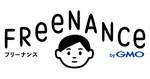

Pepabo Tech Portal
https://tech.pepabo.com/
GMOペパボのエンジニア・デザイナーによる技術情報のポータルサイト
フィード
fastlaneを使ってAndroidアプリを複数のトラックで審査に出す方法 1
1
Pepabo Tech Portal
minne事業部プロダクト開発チームのtepiです。アプリ開発のCIではド定番と言えるfastlaneですが、ドキュメントに複数のトラック、特に段階的にロールアウトするパーセントを決めてリリースする方法の古い情報しかなかったので触って調べてみました。参考ドキュメント：fastlane公式ドキュメント(upload_to_play_store関数)結論fastlaneの基本複数のトラックに審査を出したい片方は段階リリースにする注意点まとめ結論以下のように記載するとできます。gradle(task: 'bundleRelease')upload_to_play_store( aab: lane_context[SharedValues::GRADLE_AAB_OUTPUT_PATH], track: 'alpha',)upload_to_play_store( track: 'alpha', track_promote_to: 'production', rollout: '0.2', skip_upload_metadata: true, skip_upload_images: true, skip_upload_screenshots: true, skip_upload_changelogs: true, skip_upload_aab: true, skip_upload_apk: true,)fastlaneの基本fastlaneでは以下のようにすることで、直前に実行されているビルド結果を用いて、指定されたトラック(リリースバージョン)にリリースを行ってくれます。gradle(task: 'bundleRelease')upload_to_play_store( track: 'alpha',)trackには、production、alpha、beta、internal等が指定できます。自分では使ったことが無いのですが、調べてみるとオープンテストでは好きな名前が指定できるようで、名前に合わせて指定すれば良いようです。複数のトラックに審査を出したい上記を見たらすぐにわかるかと思いますが以下のようにすれば複数のトラックにアップロードすることが可能です。gradle(task: 'bundleRelease')upload_to_play_store( track:
6日前

複雑な業務の地図をVSM（バリューストリームマッピング）で描く 1
Pepabo Tech Portal
こんにちは！GMOクリエイターズネットワーク CTOのぼいらーです。弊社としてはブログやテックブログを投稿する場を持っていないので、グループ会社であるGMOペパボのテックブログの場所をお借りしています！GMOクリエイターズネットワーク社内のとある業務を行っているチームにて、業務改善プロジェクトを実施しました。そのなかで、今現在実施している業務をVSM（バリューストリームマッピング）という手法を用いて見える化しました。今回、そのプロジェクトのプロダクト開発メンバーとして中心的に動いていただいた、業務委託のちょなんさんに記事の執筆をお願いしました。フリーナンスでプロダクトマネージャーをしているちょなんです。即日払い（手持ちの請求書を即日現金化、借りずに資金調達が可能）でフリーランスの方々を支援するフリーナンス。フリーナンスでは日々沢山の即日払い申し込みをいただいており、即日払いの審査を担当するチームが複雑な業務と向き合いながら、業務の改善にも取り組んでいます。この記事では、即日払いの複雑な業務をVSM（バリューストリームマッピング）で見える化する中で、即日払いのチームで何が起きたか？VSMにより何が見えてきたか？などを紹介していきます。即日払いチームでつくったVSM（ぼかし）背景としての即日払い業務の問題認識即日払い業務において、今よりももっと効率よく業務を進められないか検討を実施していました。業務のボトルネックとなっている部分としては、以下が以前から挙がっていました。業務で使うツールが多岐に渡る業務が複雑なため、慎重な作業の確認や手戻りが生じている業務をもっと効率よくできるようにすることで、即日払いの審査時間を短くし、即日払いを申し込んでくださったユーザーの方がより使いやすいサービスにしたいという想いがありました。一方で、業務フローの中で、どこにどれくらい時間がかかっているのかを感覚的な部分でしか把握できていない状況がありました。課題に取り組む打ち手としてのVSM（バリューストリームマッピング）業務工数削減の要望が出ていたため、業務改善に関係する考え方やフレームワークを調べ直していました。トヨタ生産方式、リソース効率とフロー効率、シックスシグマ、VSM（バリューストリームマッピング）。調べた中だとVSMにより、「使っているツール」「手戻り」「無駄」「実工数」「リードタ
9日前

なぜSUZURIはHerokuから「EKS」へ移設する決定をしたのか
Pepabo Tech Portal
こんにちは。技術部プラットフォームグループのshibatchです。プラットフォームエンジニアとして、主にSUZURIとminneをより良くするおしごとをしています。さて私が主として携わっているSUZURIですが、2014年のサービス開始以来、一貫してHerokuを利用してきました。このたび、10年間使っていたプラットフォームを卒業し、新たにAmazon EKS(Elastic Kubernetes Service)へ移す方針に決めた経緯についてお話しします。EKSに移すという決定にするまでに多角的に検討し、時に悩みながら決定した過程について明らかにしていきます。なお、現在プラットフォーム移設の真っ最中であり、移設の詳細な内容はこの記事に含めません。移設作業はほぼ完了に向かっており、また別途お話しする予定です。この記事は以下の3部構成になっています。Herokuから移行しようと思った経緯AWSがよいと思った理由ECS？EKS？それともApp Runner？その前にちょこっとだけPRさせてください。現在SUZURIではTシャツセールを開催中です！(6/23まで) もしよければお気に入りのTシャツを見つけてみてくださいね。Herokuから移そうと思った経緯Herokuは運用する上でラクで非の打ちどころがないPaaSHerokuから移設する理由を述べる前に、まずはHerokuが現在でも非常に良いPaaSであることをお伝えしたいです。HerokuではDatabaseのアドオンやRedisのアドオンも含めてSUZURIのシステムで全面的に利用しています。その中で運用している上で障害らしい障害はなく、トラフィックが増えた場合でもWebコンソールやCLIからラクにスケールできる簡便さを備えています。レイテンシが悪化したような体験もまれで、デプロイやロールバックもしやすく、アプリケーションエンジニアがエンジニアリングに集中できる環境でありました。なぜHerokuから移設することに？では、なぜHerokuから移行することにしたのでしょう？いちばん大きな理由、それはGMOペパボでは複数のサービスを提供しており、SUZURIがサービス開始した当初よりプラットフォームを自身でコントロールしていける知見がたまってきたため、Herokuほどのフルマネージド加減が必要なくなってきたことです。GMO
20日前
Google CloudのOS LoginとIAPによってSSH接続のためのユーザーと踏み台の管理を簡単にする
Pepabo Tech Portal
こんにちは！技術部プラットフォームグループの染矢です。この記事では、Google CloudのOS Login機能とIdentity-Aware Proxy（IAP）サービスによって、LinuxサーバーにSSHするためのユーザー管理とネットワーク管理を簡易化する方法を紹介します。背景クラウド技術によって、複数のVMインスタンスを簡単に作成できるのが当たり前の時代になりました。しかし、VMインスタンスをセキュアに扱うには、ログインユーザーのセキュアな管理が必要です。VMインスタンスの数が増えれば増えるほど、また管理者が増えれば増えるほど、Linuxユーザーとその鍵の複雑な管理が必要になります。また、ログインできるネットワーク経路を制限するために、いわゆる「踏み台サーバー」を設置することもあります。踏み台サーバーとは、内部のサーバーにアクセスするために、外部からのログインを受け付けるためのサーバーです。踏み台サーバーを経由してのみ内部のサーバーに接続できるようにすれば、外部と接点を持つインスタンスの数を減らすことができます。しかし、踏み台としての機能しか持たないサーバーのためにインスタンスを保持するコストを払うことになります。さらに、踏み台サーバー自体をセキュアに保つことにもそれなりの労力がかかります。ここで、サーバーがすべてGoogle CloudのCompute EngineのLinuxサーバーであれば、これらユーザーや踏み台サーバーの管理をすべてGoogle Cloudに任せることが可能です。具体的には、OS Login機能によってLinuxユーザーをGoogle IDに紐付け、IAPサービスによってアクセスポリシーに従ってTCP通信をネットワークの外から対象のインスタンスに転送できます。なんとどちらの機能も現在は無料です。それぞれの機能の概要あとで実装例として記載する事例を理解するために、最低限必要な概念を簡単に説明します。正確な説明は公式ドキュメントを読んでいただくのがよいです。OS Loginhttps://cloud.google.com/compute/docs/oslogin?hl=jaOS LoginはGoogle Compute Engineの機能の一つです。それぞれのインスタンスにおいてLinuxユーザーをGoogleアカウントに紐付けて管理して
20日前
その日はやりたい開発・業務に超集中！SUZURI事業部の「コミュデイ」の取り組みを紹介
Pepabo Tech Portal
今回のテーマSUZURI事業部の取り組みの1つである「SUZURIのコミュデイ」についてご紹介します。「コミュデイ」とは出社を活用してパートナー同士のコミュニケーションを増やし、同期的にプロダクトの改善をしたり、業務の効率化に集中したりするために月に1度開催されている行事です。コミュデイの元になった活動SUZURIを運営するGMOペパボには年に1度、職種や部署を越えて開発を行う「お産合宿」というイベントがあります。昨年のお産合宿では”AIで「人類のアウトプットを増やす」”をテーマに、2日間という限られた時間でたくさんのアウトプットが生まれました。テーマは”AIで「人類のアウトプットを増やす」” 過去最多！？の84名が参加！「お産合宿 2023」 - ペパボHRブログこの取り組みから「さらに頻度を上げて事業部ごとに合宿をしても良いのでは？」という提案と「プロダクトの改善や業務効率化に集中して取り組みたい」という課題がありました。そこで生まれたのが「SUZURIのコミュデイ」です。事業部を横断した全社的な取り組みではありますが、2023年9月からSUZURIが先行してプロジェクトを開始しているので、実際にどのようなことをしているのか、何が生まれたのかなどをご紹介します。どのようなことをしているのか各パートナーやチームがどんなことに取り組むかは各々が判断したり、チームのリーダーが決定をしたりします。今まで行われている例は次の通りです。プロジェクトの方向性や開発・デザインの要件についてなどを集まって話す開発環境の改善やリファクタリング普段行っている業務の効率化・自動化対面で行いたい会議など、オフラインのコミュニケーションによって円滑になる業務通常業務で後回しになってしまっているタスク当日に専用チャンネルがSlackで作成され、各パートナーが「今日やること」を宣言します。※一部の具体的な内容は文字を置換していますコミュデイの日は定例系のミーティングも原則スキップをし、宣言したタスクに集中して取り組みます。夕方ごろには振り返りの時間を設け、どんなアウトプットを生み出せたのかをNotionに記載します。どのような成果があったのか「コミュデイ」にはエンジニアに限らず、ディレクターやデザイナーなどさまざまな職種のパートナーが参加しています。今までのコミュデイを通して生まれてきたものの
1ヶ月前
「有給マン」というbotを作った話 〜「おれは有給とったよ」で休む意識を変える〜
Pepabo Tech Portal
こんにちは、DevRelのボブです。以前はサブマネージャーを務めていましたが、初めてマネージメントに就任した際の労務管理の経験についてお話します。今回は、その中でも特に印象深かった「有給休暇取得の促進」についての取り組みを共有します。背景マネージメントに就任して最初に取り組んだのが勤怠管理でした。各パートナーの休日の使い方を確認するうちに、特に有給休暇の取得状況にばらつきがあることに気がつきました。チームのみんなにはしっかり休んでもらいたいという思いが強くなり、この課題に取り組むことにしました。課題と目的勤怠管理を通じて見えてきた課題は次の通りです。有給休暇の取得率が低い。有給休暇の有効期限が近づいているが、未消化のままのケースが多い。これらの課題を解決するために、有給休暇をもっと気軽に取得しやすくする仕組みが必要でした。解決策: 有給botの作成そこで、私はSlackに情報を流すワークフローを作ることにしました。このbotは以下のように機能します。月に一度、ランダムに「有給マン」が「俺は有給取ったよ」と声をかける。この簡単なbotがチームメンバーの意識を変える一助になると考えました。失敗例最初は「あなたは有給を取ることができていますか？」といった直接的な質問を試みましたが、圧迫感があり逆効果でした。パートナーからも「有給マウントを取られている気がする」との声が上がりました。成功例そこで、「有給マン」が登場。「俺は有給取ったよ」と軽く報告するだけで、Slackチャンネル内のみんなの反応は一変しました。「さすが有給マン」「おれは今週金曜とるよ」「有給マン好きだわ〜」といった前向きな反応が増えました。この成功は、パートナーからの『「あなたは有給取得(or 消化)できていますか」とかにするかなあ』といった意見を取り入れた結果でした。成果有給bot導入後、有給取得率が少しずつ上昇しました。具体的な定量的な数値は控えますが、定性的にはSlackで気軽に有給について気づきを得る反応が出てきました。有給に関する話題がチーム内で自然に増え、休むことに対する前向きな意識が浸透しました。これにより、全体的なチームのモチベーションに寄与したものと思われます。まとめ有給botを導入することで、有給取得のハードルを下げることができました。今回この記事を書くに至ったのは、元チームメンバーの方か
1ヶ月前